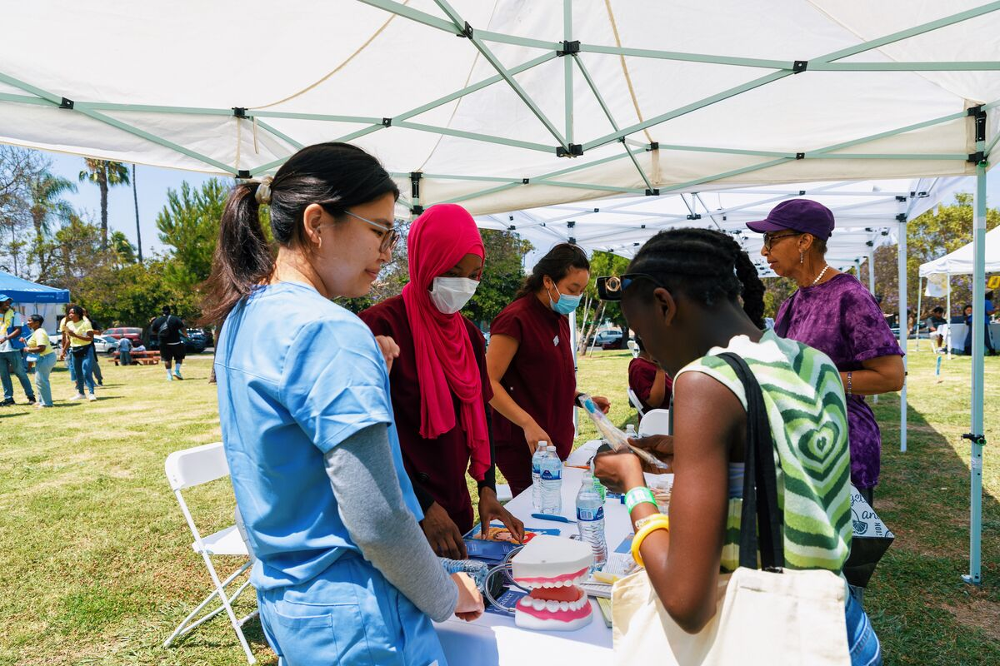
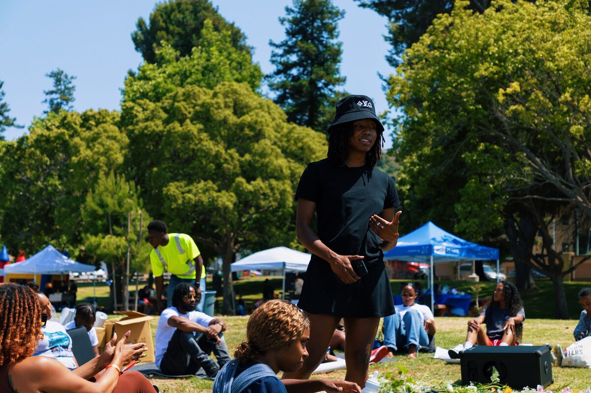
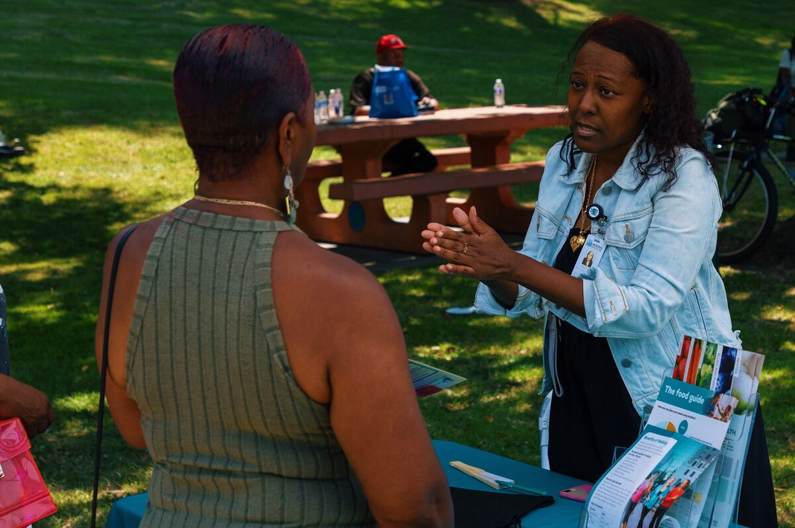
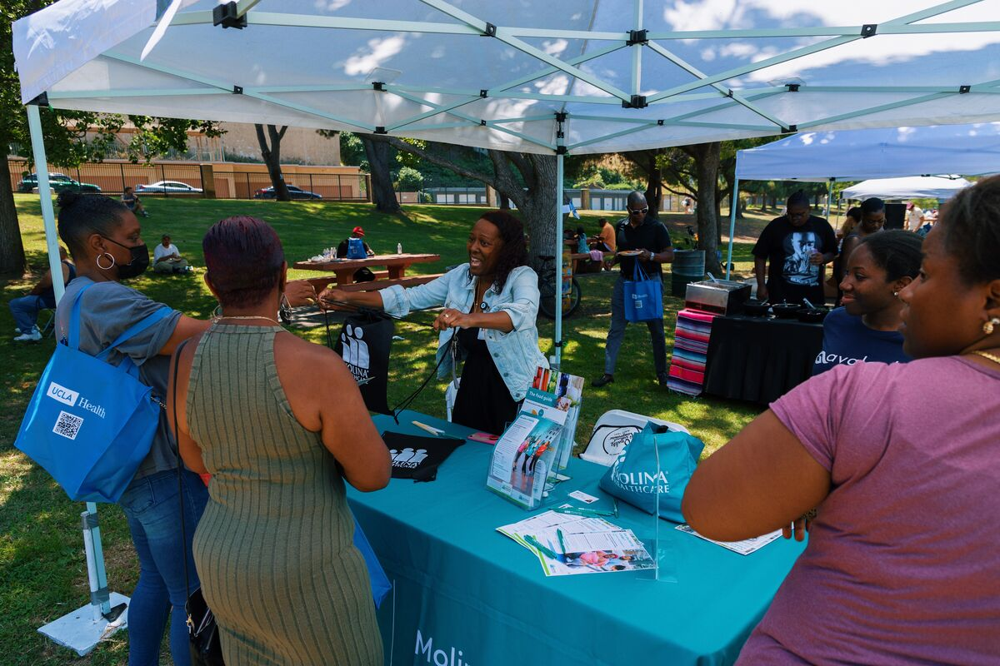

Every initiative we run is rooted in the Mind, Body & Soul framework — a holistic approach adapted from the bio-psycho-social-spiritual model of health.
Our health fairs are free, full-day events that bring medical screenings, wellness activities, and social support directly to South LA communities. They are designed to be joyful, welcoming, and grounded in trust — not clinical visits.
We partner with trusted community organizations so that community members see familiar faces alongside new ones. Our goal is not just health data — it’s building a relationship between our people and a healthcare system that has historically failed them.


Our workshops are built around topics chosen by community members — not by a predetermined curriculum. We run listening sessions first, then develop programming that responds to what people actually want and need to know.
Workshops are interactive, accessible, and facilitated by medical students and community educators who reflect the communities we serve. We bring knowledge in exchange for the knowledge communities already hold.
A health fair isn’t enough on its own. At every event, we conduct social needs assessments that connect community members to the resources they need beyond the day itself — housing, health insurance, food access, emergency services, and more.
In 2024, 24 social needs assessments were completed. Of the 20 individuals referred to community resources, 16 have since successfully connected. We follow up. We close the loop.
See Our 2024 Impact

Our partnerships are not transactional. We work alongside organizations that have existing trust in the communities we serve — because that trust takes years to build and cannot be manufactured.
Our current partners include TRAP Medicine (which provides weekly services in Baldwin Village), UCLA Health, Charles R. Drew Medical Society, Seeing Over Large Obstacles (SOLO), and others. We are always looking to build new relationships rooted in shared values.
Become a Partner